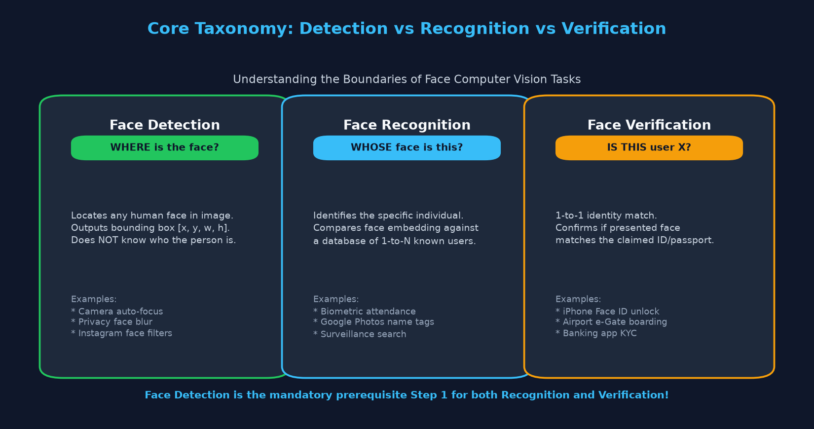
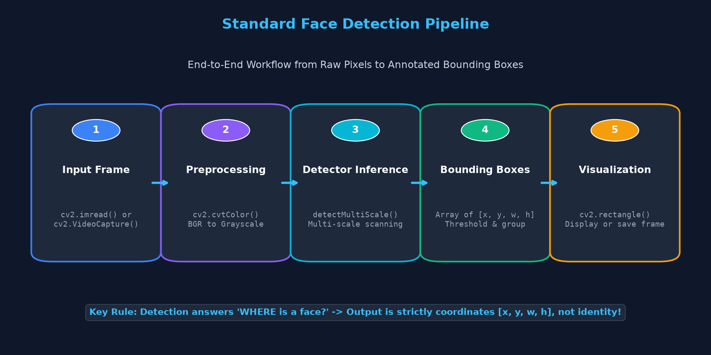
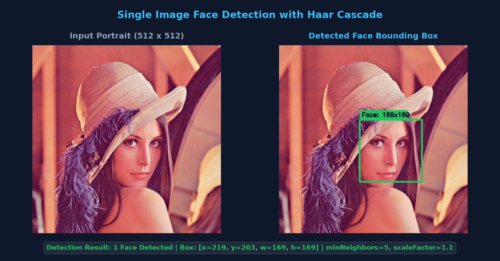
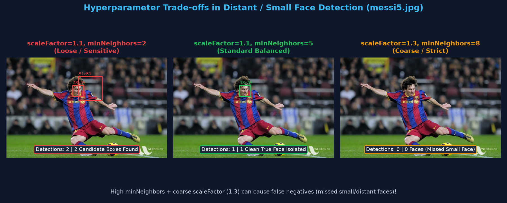
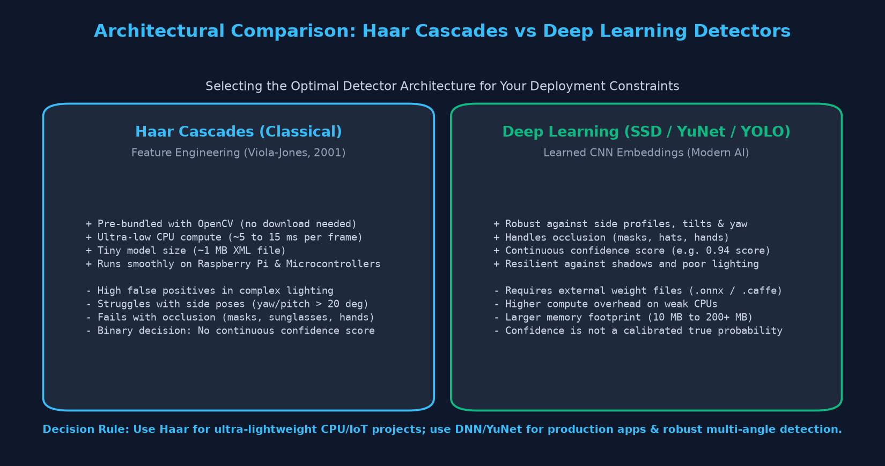
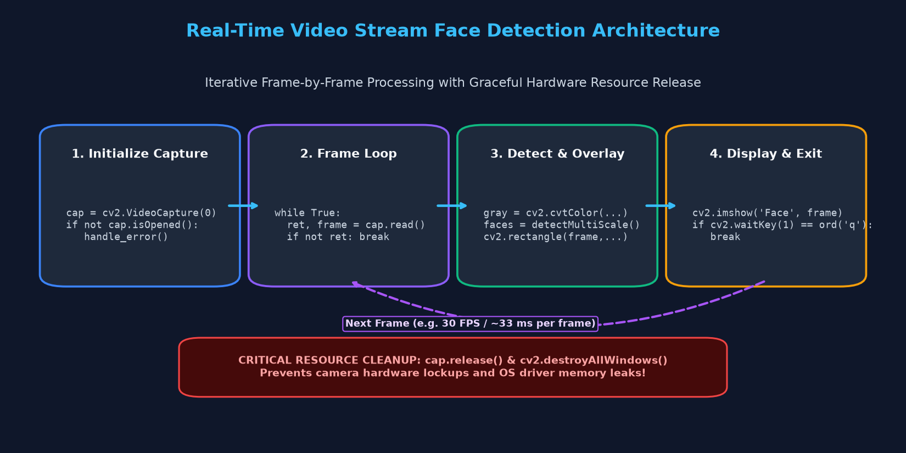

End-to-End Face Detection Pipelines, Haar vs Deep Learning (DNN), Video Streams, and Production Best Practices
Computer vision mein beginners aksar teen shabdon ko aapas mein mix kar dete hain: Detection, Recognition, aur Verification. Lekin in teeno ke maqsad aur algorithms mein zameen-aasmaan ka farq hai:

[x, y, w, h] hota hai. Chahe aap iPhone Face ID banayein ya Google Photos automatic album, Face Detection hamesha pehla anivarya step (prerequisite) hota hai.
Chahe aap single static photo process karein ya 60 FPS live webcam stream, face detection ka pipeline 5 core stages follow karta hai:

cv2.imread) ya camera hardware se live frame grab karna (cv2.VideoCapture).cv2.cvtColor) kyunki intensity contrast detection ke liye kaafi hota hai aur 3x memory bachata hai.detectMultiScale) taaki paas aur door dono tarah ke faces capture ho sakein.minNeighbors) taaki duplicate rectangles merge ho sakein.cv2.rectangle) ya detected face ROI ko crop karke aage downstream task (blur/filter/save) ke liye bhejna.Topic 15 mein humne Haar cascades ki internal working (Integral Images, AdaBoost) dekhi thi. Practical application likhte waqt aapko in 3 golden rules ka dhyaan rakhna hota hai:
Kabhi bhi hardcoded relative path mat likhein. Hamesha cv2.data.haarcascades + 'haarcascade_frontalface_default.xml' use karein aur classifier.empty() se verify karein.
scaleFactor: 1.1 (har pyramid step par 10% image downsample).
minNeighbors: 4 se 6 (false positives suppress karne ke liye).
minSize: (30, 30) (chhoti noise filter karne ke liye).
Yeh script ek static portrait image (lena.jpg) ko load karti hai, classifier ki integrity check karti hai, face detect karti hai aur annotated image save karti hai:
import cv2
# 1. Image load karein aur verify karein
img_path = 'lena.jpg'
img = cv2.imread(img_path)
if img is None:
raise FileNotFoundError(f"Image nahi mili: {img_path}")
# 2. Pretrained Haar Cascade load karein
cascade_path = cv2.data.haarcascades + 'haarcascade_frontalface_default.xml'
face_cascade = cv2.CascadeClassifier(cascade_path)
if face_cascade.empty():
raise IOError(f"Cascade XML load nahi ho payi: {cascade_path}")
# 3. Preprocessing: BGR to Grayscale
gray = cv2.cvtColor(img, cv2.COLOR_BGR2GRAY)
# 4. Multi-scale detection run karein
faces = face_cascade.detectMultiScale(
gray,
scaleFactor=1.1,
minNeighbors=5,
minSize=(30, 30)
)
print(f"Total Detected Faces: {len(faces)}")
# 5. Bounding box draw karein aur coordinates print karein
for (x, y, w, h) in faces:
print(f"Face Box: x={x}, y={y}, width={w}, height={h}")
cv2.rectangle(img, (x, y), (x + w, y + h), (0, 255, 0), 2)
cv2.putText(img, f"Face: {w}x{h}", (x, y - 10),
cv2.FONT_HERSHEY_SIMPLEX, 0.6, (0, 255, 0), 2)
# Output image save karein
cv2.imwrite('detected_face_result.jpg', img)

Har image ek jaisi nahi hoti! Door khade shakhs ya chhote chehron (distant faces jaise messi5.jpg) par parameter tuning ka kya asar padta hai, aaiye dekhein:

| Configuration | scaleFactor | minNeighbors | Observed Detections | Analysis & Trade-off |
|---|---|---|---|---|
| Loose / Sensitive | 1.1 |
2 |
2 Boxes (Face + shoulder overlap) | Overly sensitive; background texture can trigger false positives. |
| Balanced Standard | 1.1 |
5 |
1 Clean Box [226, 94, 38, 38] |
Ideal compromise between sensitivity and precision. |
| Strict / Coarse | 1.3 |
8 |
0 Faces (Missed Detection) | Scale step too large (30% drop); pyramid skips the small 38px face completely! |
scaleFactor=1.05 aur moderate minNeighbors=4 behtar kaam karta hai, jabki large closeups ke liye scaleFactor=1.15 kaafi tez hota hai.
OpenCV ke paas ek powerful cv2.dnn module bhi hota hai jo deep learning models (jaise SSD ResNet-10 ya lightweight YuNet ONNX) ko directly run kar sakta hai.

Classical Haar cascade ke opposite, Deep Learning model image ko 4D tensor (blob) mein convert karta hai aur continuous confidence score (e.g. 0.94) return karta hai:
import cv2
# Deep Learning models require a preprocessed 4D Blob
# cv2.dnn.blobFromImage handles resizing, mean subtraction, and channel swap
blob = cv2.dnn.blobFromImage(
img,
scalefactor=1.0,
size=(300, 300),
mean=(104.0, 177.0, 123.0),
swapRB=False,
crop=False
)
print("Blob Shape:", blob.shape) # Output: (1, 3, 300, 300) -> 1 batch, 3 channels, 300x300
0.88) ek model activation value hoti hai.
Isse automatically real-world probability nahi maanna chahiye, kyunki out-of-distribution inputs par model overconfident ho sakta hai.
| Metric | Haar Cascades (Classical) | Deep Learning (OpenCV DNN / YuNet) |
|---|---|---|
| Dependencies | Zero external files (Pre-bundled in OpenCV) | Requires external model weights (e.g. .onnx or .caffemodel) |
| Pose Flexibility | Frontal faces only (±20° yaw) | High tolerance for profile/tilted faces (±60° yaw) |
| Occlusion Handling | Fails with masks, hands, sunglasses | Handles partial occlusion robustly |
| CPU Inference Speed | Ultra-fast (~5 to 15 ms) | Moderate (~20 to 50 ms on standard CPU) |
Video asal mein kuch aur nahi balki images ki ek continuous sequence (frames) hoti hai (jaise 30 frames per second). Isliye video face detection mein hum ek infinite loop chalate hain jo har aane wale frame par detector apply karta hai:

import cv2
# 1. Webcam capture device initialize karein (0 = default camera)
cap = cv2.VideoCapture(0)
# Hardware availability check
if not cap.isOpened():
print("Camera hardware connect nahi ho paya ya permissions denied hain!")
exit()
face_cascade = cv2.CascadeClassifier(cv2.data.haarcascades + 'haarcascade_frontalface_default.xml')
print("Live face detection shuru ho gayi hai. Exit karne ke liye 'q' press karein.")
try:
while True:
# 2. Camera se frame read karein
ret, frame = cap.read()
if not ret:
print("Frame grab fail ho gaya!")
break
# 3. Grayscale conversion
gray = cv2.cvtColor(frame, cv2.COLOR_BGR2GRAY)
# 4. Fast multi-scale detection
faces = face_cascade.detectMultiScale(gray, scaleFactor=1.15, minNeighbors=4, minSize=(40, 40))
# 5. Har detected face par green rectangle draw karein
for (x, y, w, h) in faces:
cv2.rectangle(frame, (x, y), (x + w, y + h), (0, 255, 0), 2)
cv2.putText(frame, "Face", (x, y - 8),
cv2.FONT_HERSHEY_SIMPLEX, 0.55, (0, 255, 0), 2)
# 6. Display frame
cv2.imshow('Live Face Detection', frame)
# 7. 'q' key press hone par loop exit karein
if cv2.waitKey(1) & 0xFF == ord('q'):
break
finally:
# 8. MANDATORY CLEANUP: Camera hardware release karein
cap.release()
cv2.destroyAllWindows()
print("Camera successfully release ho gaya aur resources clean ho gaye.")
cap.release() aur cv2.destroyAllWindows() ko finally: block mein rakhein.
Agar program crash ho jaata hai bina camera release kiye, to OS camera driver lock ho sakta hai aur system restart karne ki zaroorat pad sakti hai!
• Camera Auto-focus: Smartphone cameras chehre pehchan kar instant focus aur exposure adjust karte hain.
• Privacy Blurring: Street view aur public surveillance videos mein automatically faces ko blur karna.
• Smart Photo Cropping: Social media avatars banate waqt photo ko chehre ke charo taraf center crop karna.
• Virtual Makeup / AR Filters: Snapchat aur Instagram filters face bounding box ke andar landmarks map karte hain.
• Harsh Lighting & Shadows: Strong back-light ya darkness mein contrast filters fail ho jaate hain.
• Severe Occlusion: Face masks, haath ya motorcycle helmets hone par detector miss kar deta hai.
• Extreme Angles: Sar 45° se zyada tilt hone par frontal Haar cascade reject ho jaata hai.
• Demographic Bias: Detectors ko diverse skin tones aur lighting conditions par rigorously test karna anivarya hota hai.
cv2.resize(frame, (640, 480)) karein, detection ke baad coordinates ko scale up karein.
assert not face_cascade.empty() check karein.
cv2.imshow() ke baad cv2.waitKey(1) nahi lagayenge, to OpenCV window freeze ho jaayegi aur koi image render nahi hogi!
minSize=(30, 30) ya (40, 40) set karein.
Apni understanding test karne ke liye questions par click karein aur answer reveal karein:
scaleFactor image pyramid mein dense sampling karta hai, jisse chhote resolution waale chehre skip hone se bach jaate hain.
cap.release() call nahi kiya gaya, to camera hardware lock reh sakta hai aur doosri applications use access nahi kar payengi.